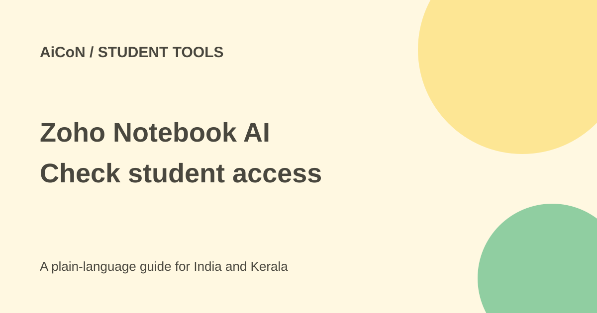

Zoho Notebook AI: student access and transcription limits
Zoho Notebook AI works inside the note-taking app. It can summarise notes, make mind maps and transcribe recordings. Eligible students can get AI through the Student Plan; ordinary free Notebook access is not the same offer.

What does the AI add?
Zoho describes note summaries, writing help, questions about notes, mind maps and audio transcription. A mind map turns a long passage into linked ideas. It can help with revision, but a missing or wrong link can also distort what the original note says.
This is different from Google NotebookLM. Zoho's AI lives inside its Notebook app and works with the notes you already store there. It is not a guarantee that every generated answer is supported by the original material.
Which plan includes it?
The billing guide says Notebook AI is included with Pro Plus and Business, not ordinary Pro or Pro Lite. It also says students can use an educational email for the Student Plan, which includes AI and 5 GB storage. If activation fails, the guide directs students to Notebook Support.
An institution-looking email does not prove an offer is active. Check the actual account confirmation, eligibility and terms before depending on it for a semester. No Indian college account was verified for this article.
Transcription languages and device differences
The current AI page lists English, Spanish, French, German, Italian, Dutch and Russian for transcription across platforms. Malayalam and Hindi are not in that seven-language list. Broader translation support is a different claim from audio transcription support.
Pro Plus includes up to 30 transcription hours a month. Automatic meeting recording is described as a Mac feature; grammar insights run on the web, and shape recognition is on mobile. Do not assume every feature works the same on Android and Windows.
How to try it for study notes
- Open the official AI page and compare the plans.
- If you are a student, use your own institutional email and check that the Student Plan is actually active.
- Create a short public or original sample note with no private information.
- Ask for a summary or mind map, then compare every key point with the source.
- Before recording a class or meeting, get the needed permission and confirm a supported audio language.
- Try a short recording, read the transcript and correct names, numbers and missing words.
- Check your remaining monthly allowance before processing long recordings.
- Export important notes and review subscription, deletion and connected-app controls before expanding use.
Free or paid in India?
The Student Plan is the documented free AI route for eligible students. Pro Plus and Business are paid routes. This source check did not establish an unambiguous current Indian checkout total, taxes or renewal price. Check the local billing screen before upgrading.
The sources also disagree on some ordinary Essential storage numbers: the pricing comparison says 500 MB while the billing article describes 2 GB for personal users. That is another reason to check actual account limits rather than reuse a general free-plan number.
Privacy and connections
Zoho says it does not use customer notes to train AI models and encrypts notes in transit and at rest. Some mobile AI runs on-device, according to its page; that is not a promise that all transcription, sync or connected-AI work stays offline.
Its MCP support lets other assistants access and organise Notebook through tools. Connecting another service creates a separate access and data-sharing decision. Start with a test notebook and read the permissions instead of connecting all study or work notes.
What changed since the original post?
The student and paid-plan distinction remains supported. We added the seven transcription languages, platform differences, 30-hour Pro Plus allowance and the storage-page mismatch. No recording, account connection or subscription change was made.
Frequently asked questions
Is all Notebook AI free?
No. The Student Plan is a separate eligible offer; other AI plans are paid.
Can it transcribe Malayalam?
Malayalam is not listed in the current seven-language transcription support.
Does Pro include AI?
The current billing guide says Pro and Pro Lite do not bundle it.
Sources: Official AI feature page · Plan and billing guide · Current plan comparison · Transcription guide. Checked 7 October 2026.